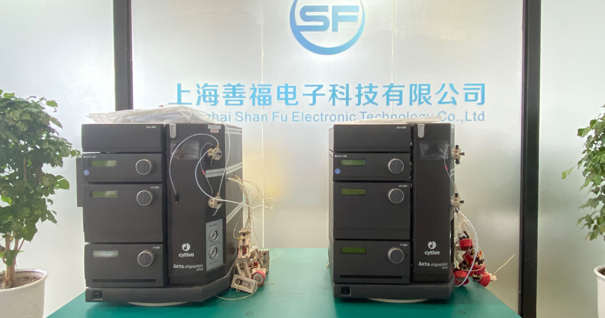
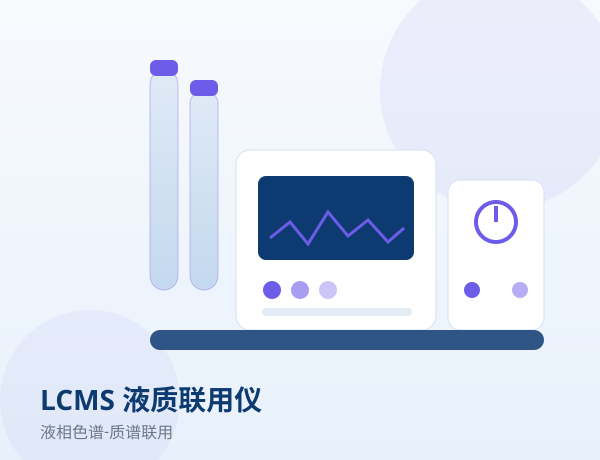
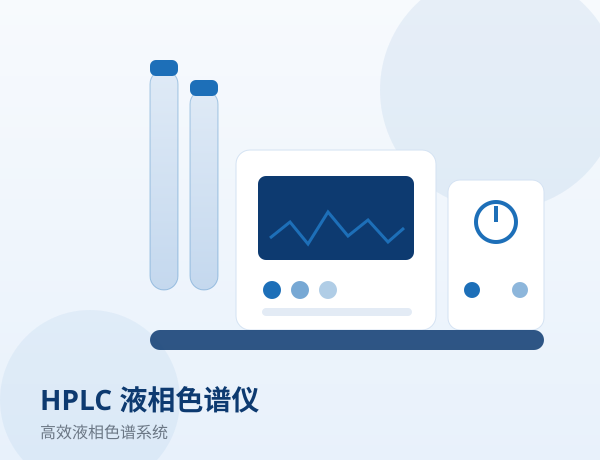
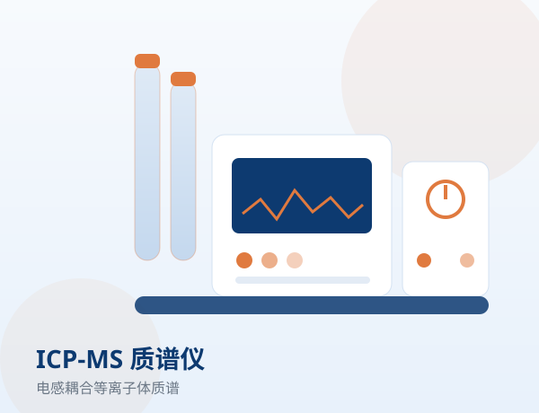
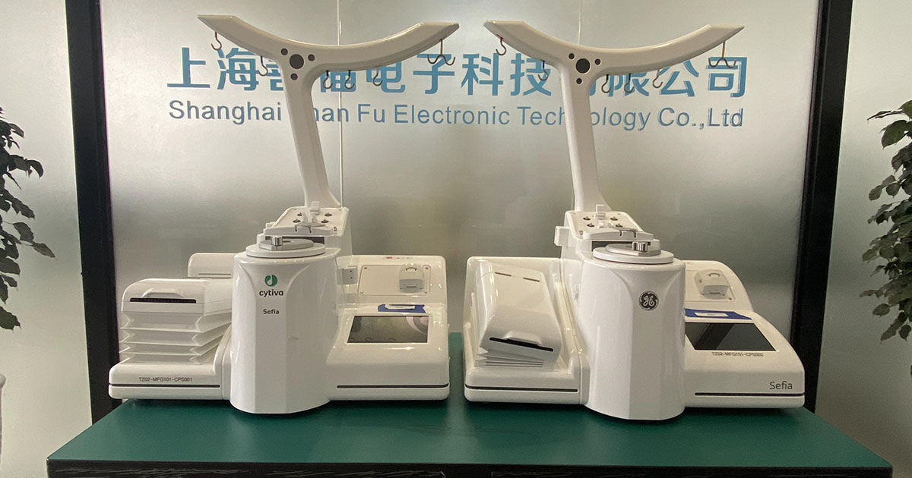
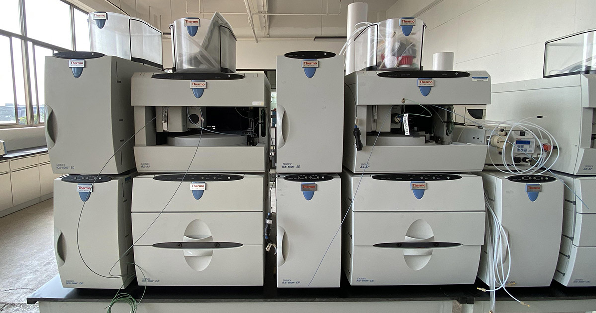
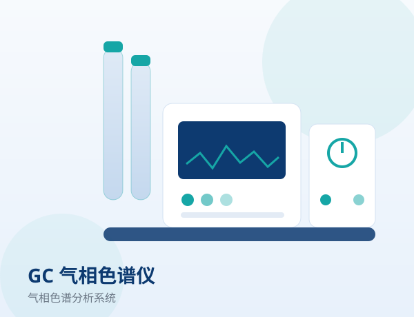
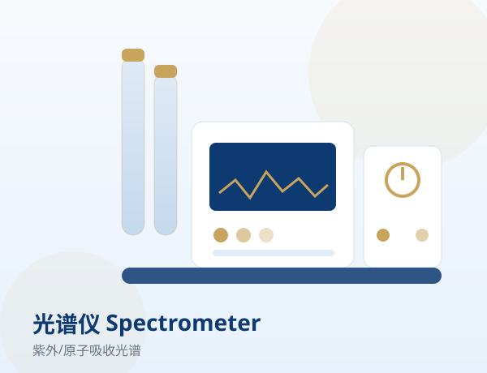
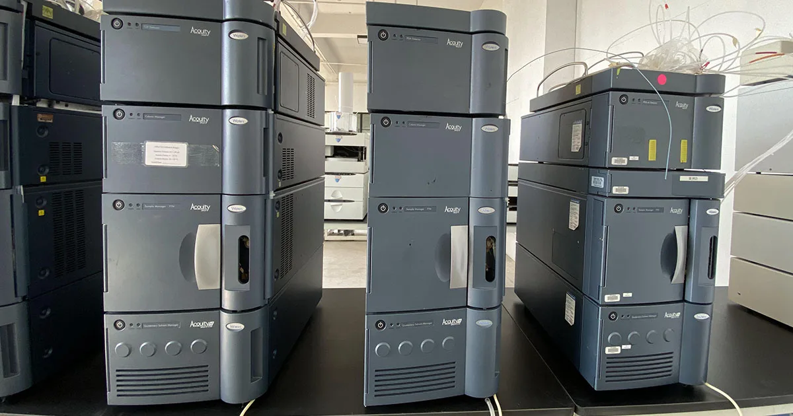

Cytiva（思拓凡）ÄKTA oligopilot plus 寡核苷酸合成仪（二手供应）
上海善福电子科技有限公司，二手供应 Cytiva（思拓凡）ÄKTA oligopilot plus 全自动寡核苷酸合成仪。该机为泵驱动紧凑型系统，采用流通式反应器技术，可减少试剂消耗。适用于多种寡核苷酸化学与疗法（RNAi、siRNA、适配体等）的研究与工艺开发。本台仪器经检测，成色良好、运行稳定，可提供安装调试与操作培训。
可选品牌：Cytiva（思拓凡）
免费询价主要配置与参数
| 仪器类型 | 全自动 DNA/RNA 寡核苷酸合成仪（Cytiva ÄKTA oligopilot plus 100） |
|---|---|
| 反应器技术 | 流通式反应器（flow-through），试剂消耗低、反应可控、易放大 |
| 应用方向 | RNAi、siRNA、适配体等工艺研究与开发 |
| 状态 | 二手供应，成色良好，经检测运行稳定，支持现场看机 |
| 质保 | 可提供质保、安装调试与操作培训 |
产品详情
Cytiva（思拓凡）ÄKTA oligopilot plus 全自动寡核苷酸合成仪，整机外观整洁、运行状态稳定，二手供应，支持预约到场看机。
上海善福已对整机进行联机检测与功能核查，确保交付即可投入运行。
ÄKTA oligopilot plus 是一款灵活、全自动的 DNA/RNA 寡核苷酸合成仪，专为研究与工艺开发设计，可满足多种寡核苷酸化学与疗法需求。
系统采用流通式反应器技术，减少试剂消耗，实现对反应速率与接触时间的控制，并支持顺畅的工艺放大。
系统配备电导与 UV 在线监测，可自动计算偶联效率并在异常时停机；基于 UV 信号的压力控制与条件式方法编程可实现快速柱清洗、缩短合成循环时间。
上海善福可提供包括安装调试、操作培训、质保与后续维修在内的服务，帮助客户快速搭建或升级寡核苷酸合成平台。
相关产品

二手液质联用仪
液质联用 LCMS三重四极杆液质，适用于定量与残留分析。
查看详情
二手液相色谱仪
液相色谱 HPLC二元/四元泵、自动进样、柱温箱成套配置，状态良好。
查看详情
二手 ICP-MS 质谱仪
ICP-MS电感耦合等离子体质谱，痕量元素分析利器。
查看详情
思拓凡 Cytiva Sefia S-2000 全自动细胞处理系统（二手现货）
细胞处理系统思拓凡 Cytiva（原 GE 旗下）Sefia S-2000 全自动细胞处理系统，功能封闭式细胞制备平台，上游分离/下游收获一机多用，二手现货成色良好。
查看详情
赛默飞 Thermo Fisher ICS-5000+ 离子色谱仪
离子色谱 ICICS-5000+ 离子色谱系统，梯度淋洗、电解抑制、电导/电化学检测兼备，适用于离子型化合物分析。
查看详情
二手气相色谱仪
气相色谱 GCFID/ECD/FPD 多检测器，配毛细管进样系统。
查看详情
二手光谱分析仪
光谱仪紫外、原子吸收、荧光等光谱仪器现货。
查看详情
Waters ACQUITY UPLC 超高效液相色谱仪
液相色谱 HPLC超高效分离，耐压高、灵敏度好。
查看详情相关服务
与本文相关的仪器服务，点击了解详情。